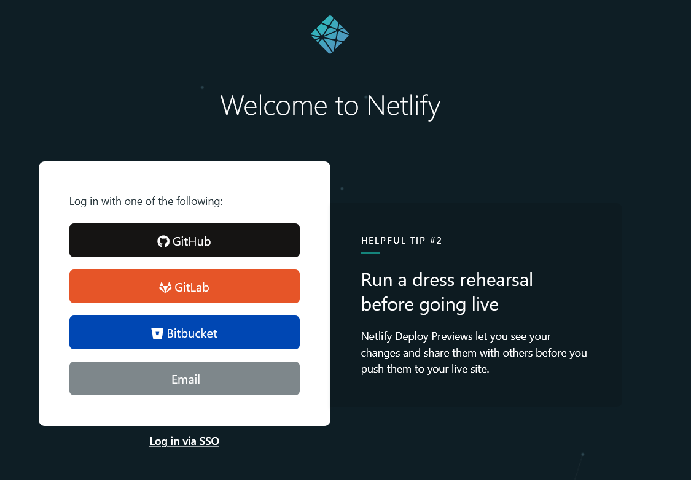
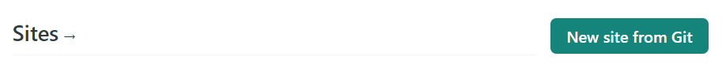
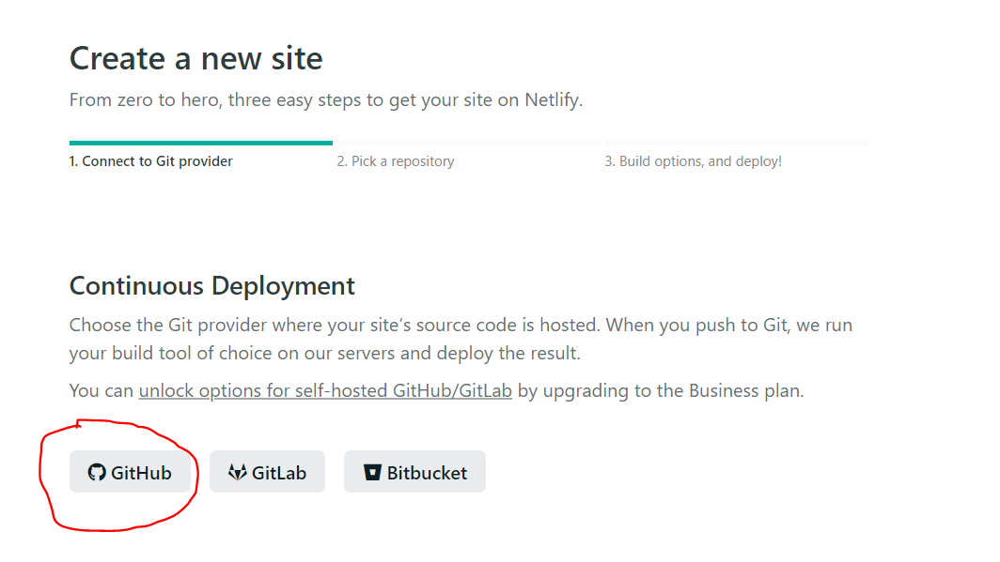
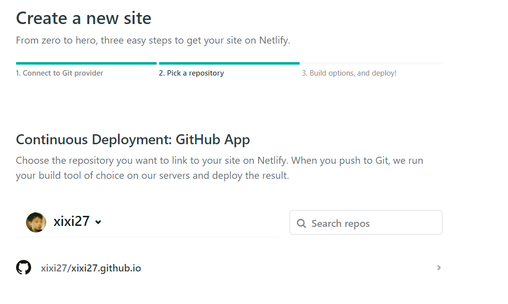
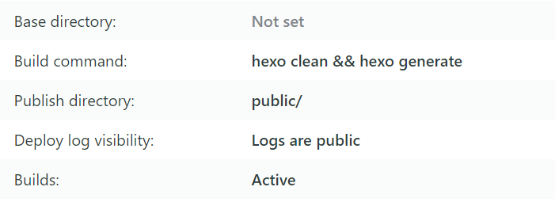
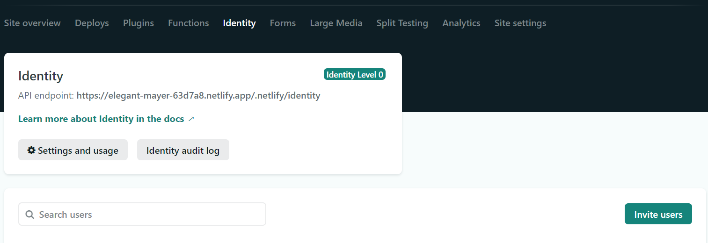

一想到每次提交完code之后，都要手动部署一下博客很麻烦， 于是决定看看有没有自动部署的方法，结果发现Netlify非常的好用， NexT官方也是采用的Netlify自动部署
注册Netlify账号
- 官网: https://app.netlify.com/
- 使用Github 账号进行注册

创建site
登录成功之后，创建site
选择 git 地址
选择 repository

Deploy
- 创建成功之后，填写deploy参数

2021.02.01 更新一下参数的配置
选择masterbranch [即：我们之际deploy到github page的分支]的话，就不需要填写build command, publish directory: 选择/即可
部署成功之后，就可以查看网站了，以后只需要提交代码到github就行了，不需要手动部署了
Netlify CMS
Netlify CMS 可以帮助我们在线编辑blog
使用以下命令安装 Netlify CMS
1
npm i hexo-netlify-cms --save
在 blog 根目录下
_config.yml文件中添加以下内容1
2netlify_cms:
config_file: netlify.yaml在blog根目录下添加
netlify.yaml文件, 文件内容如下:1
2
3
4
5
6
7
8
9
10
11
12
13
14
15
16
17
18
19
20
21
22
23
24
25
26
27
28
29
30
31
32
33
34
35
36
37
38
39
40
41
42backend:
name: git-gateway
branch: hexo
media_folder: source/images
public_folder: /images
publish_mode: editorial_workflow
# pages auto generate
pages:
enabled: true
# over page collection config
# if fields not set, would use posts fields config
config:
label: "Page"
delete: false
editor:
preview: true
# fields:
# through hexo config over fields
over_format: true
scripts:
- js/cms/youtube.js
- js/cms/img.js
# A list of collections the CMS should be able to edit
collections:
# Used in routes, ie.: /admin/collections/:slug/edit
- name: "posts"
# Used in the UI, ie.: "New Post"
label: "Post"
folder: "source/_posts" # The path to the folder where the documents are stored
sort: "date:desc"
create: true # Allow users to create new documents in this collection
editor:
preview: true
fields: # The fields each document in this collection have
- {label: "Title", name: "title", widget: "string"}
- {label: "Publish Date", name: "date", widget: "datetime", format: "YYYY-MM-DD HH:mm:ss", dateFormat: "YYYY-MM-DD", timeFormat: "HH:mm:ss", required: false}
- {label: "Updeted Date", name: "updated", widget: "datetime", format: "YYYY-MM-DD HH:mm:ss", required: false}
- {label: "Tags", name: "tags", widget: "list", required: false}
- {label: "Categories", name: "categories", widget: "list", required: false}
- {label: "Body", name: "body", widget: "markdown", required: false}
- {label: "Permalink", name: "permalink", widget: "string", required: false}
- {label: "Comments", name: "comments", widget: "boolean", default: true, required: false}在 Netlify 网站设置 Identity
1
2Identity -> service -> enable Git Gateway
Identity -> Registration -> 设置为 invite only邀请自己注册Identity账号

在线编辑
在浏览器链家候面加上admin, 就可以进入编辑模式了
自己用了一次在线编辑模式，个人感觉并不是很好用，只能进行简单的文字编辑